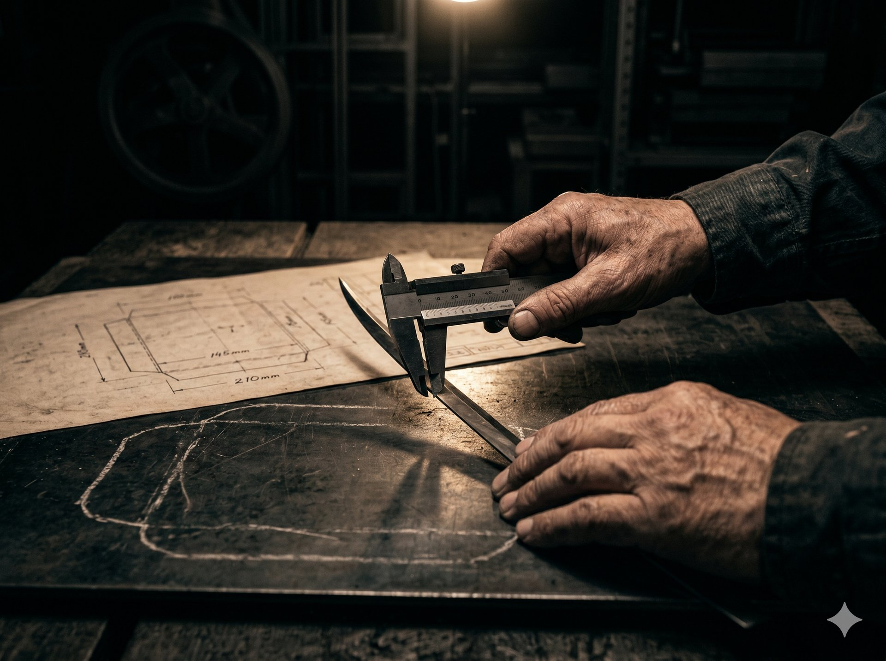
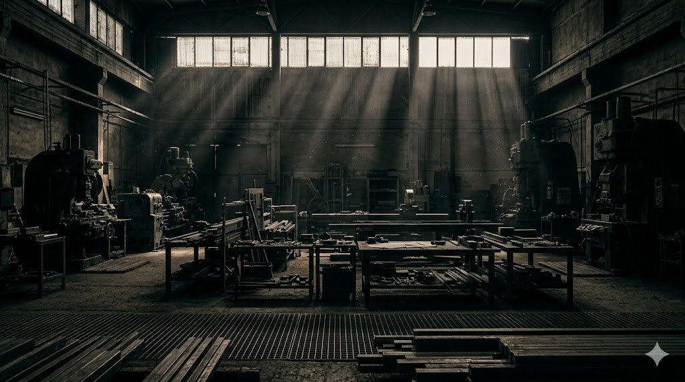

一枚の型が、何十万枚の仕上がりを決める。だから私たちは、材料の選定から出荷前の検査まで、すべての工程に理由を持って型をつくっています。新しい型はもちろん、他社でつくった型の困りごとや、図面のない現物だけのご相談も。まずは、お話をお聞かせください。

パッケージ・紙器・段ボールの抜き加工に使われるトムソン型を、設計から製造まで一貫して手がけています。CAD/CAMによる精密な設計データをもとに、レーザー加工した木型へ職人が一本ずつ刃を入れ、罫線・ブリッジ・ゴムの位置まで吟味して仕上げます。量産の歩留まりは、型の精度で決まります。
詳しく見る →
水に研磨材を加えた超高圧の噴流で素材を切断するウォータージェット加工。熱による変質や歪みがなく、ゴム・樹脂・発泡材・複合材など、刃物やレーザーが不得手とする素材も精密に切り出せます。抜き型づくりで培った「素材を見る目」と図面の精度を、受託加工としてご提供しています。
この素材は切れるか、を相談する →安くつくる方法ではなく、正しくつくる方法を。型の寿命と抜き上がりは、納品のずっと前 — 材料を選ぶ段階から決まっています。ここに掲げるのは、私たちが譲らない四つの基準です。

合板は反りと密度をロット単位で確認し、刃材は紙質と抜き数に合わせて選び分けます。型の寿命は、材料の段階で半分決まると考えています。
支給データをそのまま型にはしません。寸法・罫線・ブリッジ位置を必ず検証し、疑問があれば加工前にお客様へ確認します。
刃入れの角度、つなぎの位置、ゴムの硬度。数値にできる項目は数値で管理し、数値にならない部分は熟練の手が引き受けます。
すべての型を、図面との照合と試し抜きで確認してから出荷します。基準に満たない型は、出荷しません。

1998年から、名古屋で型をつくり続けています。
「こんなことを聞いていいのだろうか」と迷うような内容こそ、私たちがいちばん多くいただいている相談です。実際によくあるご相談を、いくつかご紹介します。
他社製の型のご相談もお受けしています。型か抜きサンプルを拝見し、原因と直し方を根拠とともにご説明します。つくり直しが最善とは限りません。
まずはお電話ください。品物の形状と枚数が分かれば、その場で納期の目安をお答えします。お急ぎの事情も含めてご相談ください。
現物からの採寸・データ起こしに対応しています。摩耗した型の複製や、廃番になった箱の型の再現もご相談いただけます。
1型からお受けしています。数量の多い少ないで、つくり方や検査の基準を変えることはありません。
ここに載っていないご相談も、もちろんお受けします。相談してみる →
かしこまった準備は要りません。多くの場合、最初のご連絡から納期のご回答まで、その日のうちに進みます。
お電話・フォーム、どちらでも。現物の写真をお送りいただくだけでも構いません。「まだ相談の段階」で大丈夫です。
図面がなければ、現物や写真から確認します。内容によっては、お電話のその場でお答えできることもあります。
金額と納期を、根拠とあわせてご提示します。内容にご納得いただいてから、正式なご依頼となります。
ご相談とお見積りは無料です。お見積り内容は、ご検討のうえお返事いただければ結構です。
Contact
新しい型のご相談はもちろん、他社製の型のトラブルや、まだ形になっていないお話でも。まずは状況をお聞かせください。
お電話で
052-XXX-XXXX
受付 平日 9:00–17:00｜名古屋工場本社
担当者が直接お答えします。作業中で出られない場合は、折り返しご連絡いたします。